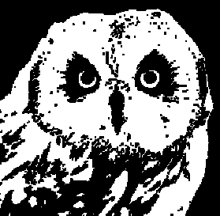

A. flammeus
short-eared owl
lucky numbers: 18, 28, 22 ✧
lucky numbers: 18, 28, 22 ✧
lucky numbers: 18, 28, 22 ✧
an extremely widespread species of grassland owl. known as part of a larger group of owls with tufts of feathers resembling mammal-like ears. it makes abrupt, scratchy sounds. tends to travel when food is scarce. tends to bother ring-tailed hawks in competition for prey. mostly monogamous. it makes nests on the ground. hates salty food. loves deeply and trea-sures all personal connections. favors the color red. cannot be-friend frogs or hares at any cost. makes uneasy friends with tigers. may be destined to fall in love with a snake.